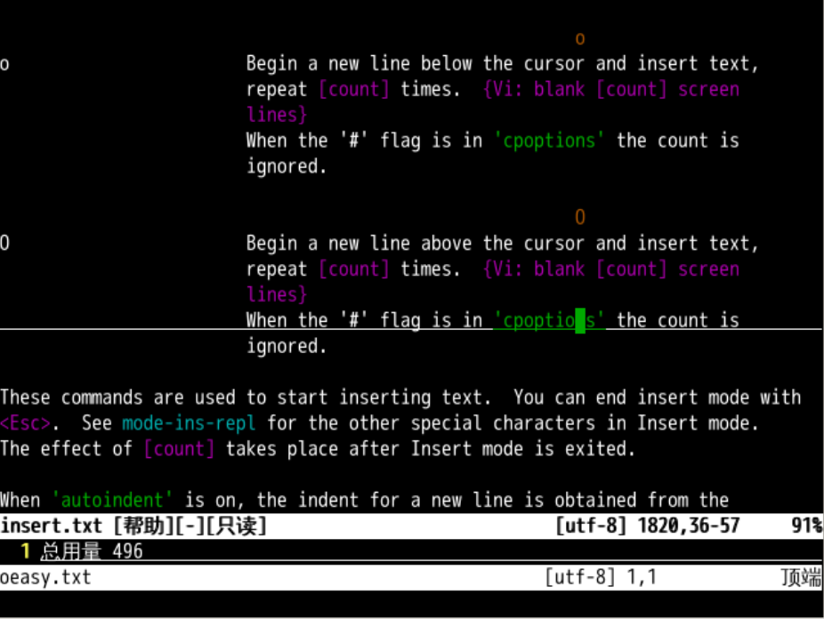
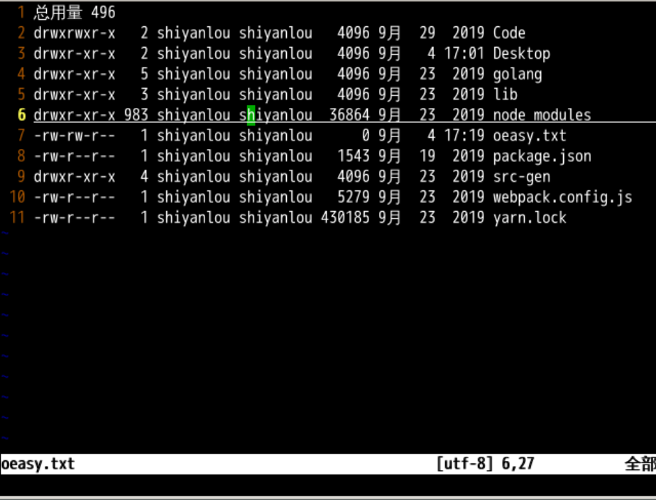
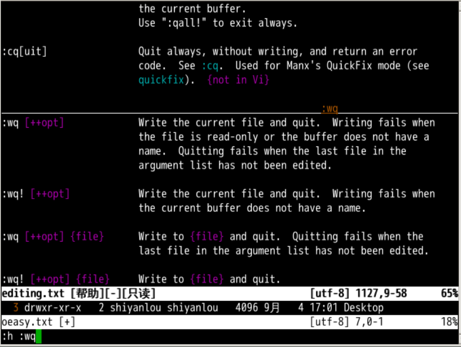

插入新行
回忆上节课内容🤔
- 上上次是
i、I在光标前面插入 - 又加了
a、A可以在光标后面插入a是在光标后插入A是在当前行最后插入

- 关于插入，还有什么命令吗？🤔
- 我们继续去查阅 help
:h i
我们发现有这样一组命令

看起来的意思是
o在- 当前行 下面 插入一个空行
- 然后切换到插入模式
O- 在当前行 上面 插入一个空行
- 然后切换到插入模式
- 一个上面 👆，一个 👇
上方 插新行

- 当前绿色的光标在第6行中间
- 如果不显示行号，就输入
:set nu - 当前模式是正常模式
- 如果不显示行号，就输入
- 如果我按下 o
- 就会在第 7 行插入一个新行
- 并且模式进入插入模式
- 按 ctrl+c
- 可以回正常模式
- o、ctrl+c
- 可以反复切换
思考
- 编辑一个新文件
- 在正常模式下输入
oeasy - 会发生什么？
下方 插新行
- u 回到最初
- 回到第 6 行中间位置
- 我按下 O
- 就在第 6 行插入一个空行
- 原来的第 7 行，变成了第 6 行
- 并把模式改为输入模式
回忆以前学的切换
- i、I和a、A
都可以进入插入模式
- i 在光标前插入
- I 在本行最前插入
- a 在光标后插入
- A 在本行最后插入
- ctrl+ c退回到正常模式
- 现在又加了 o、O
- o 本行下方插入一个新行
- O 本行上方插入一个新行
- 再练练重复、撤销、重做
- 按几次 . 重复插入操作
- u 可以撤销
- ctrl+r 可以重做
保存并退出
- 用
:wq保存并退出:w是保存:q是退出- 和在一起就是
:wq - 保存并退出
- 我们可以使用
:help :wq查看帮助

总结
- 我们这次学了两个新的东西
o和O o是在当前行下方插入新行O是在当前行上方插入新行- 这样我们就有大小写的
i、a、o可以从正常模式切换到输入模式了。

- 我们还把
:w、:q合成了:wq - 现在基本上简单的编辑没有什么问题了
- 下一步就是提高效率，用最快的方式在屏幕上移动
- 怎么做呢？
- 我们下次再说！👋